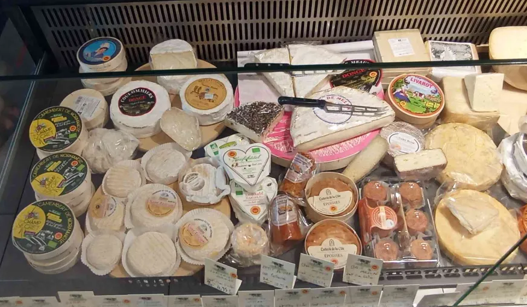
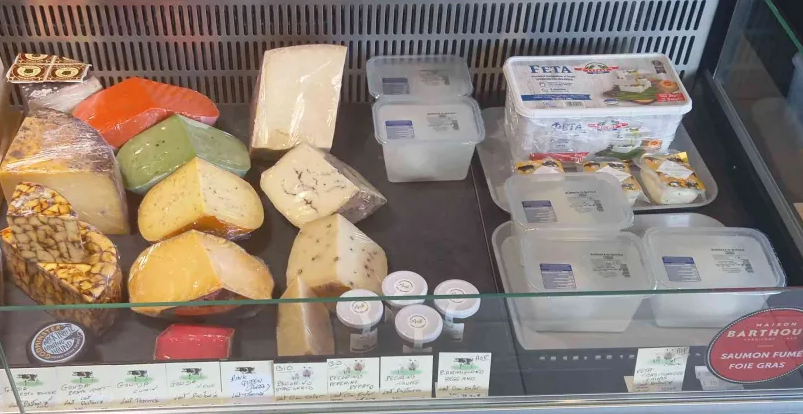
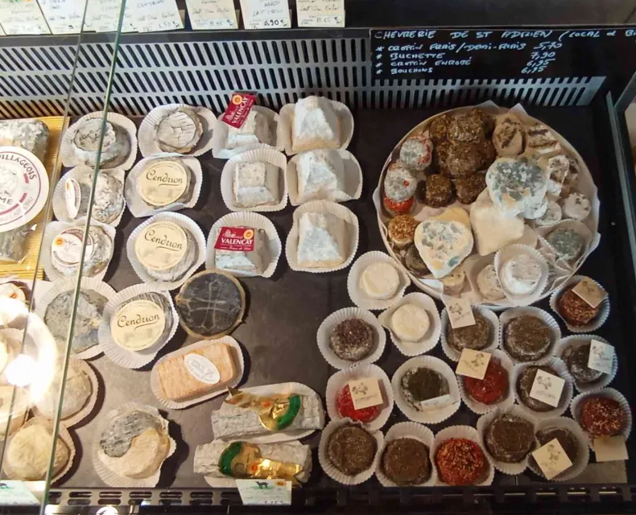
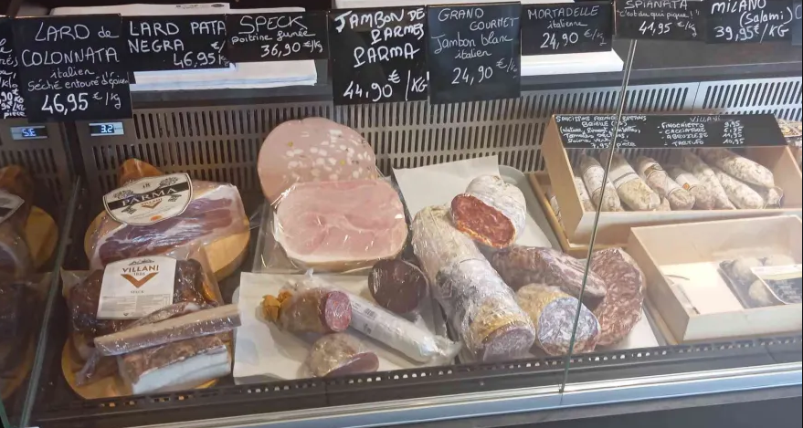

Concernant nos fromages, nous avons l'opportunité de vous proposer 3 grandes familles : les fromages à pâte molle, à croûte fleurie et les fromages de brebis.

Découvrez l'élégance crémeuse des fromages à pâte molle qui fondent délicieusement en bouche, offrant une expérience gustative riche et subtile. Parfaits pour une dégustation entre amis ou pour accompagner vos moments de détente, ces fromages captiveront vos papilles à chaque bouchée.

Laissez-vous séduire par l'irrésistible délicatesse des fromages à croûte fleurie, enveloppés d'une robe blanche veloutée qui cache des saveurs douces et complexes. Parfaitement équilibrés entre onctuosité et caractère, ces fromages sont l'essence même de l'élégance culinaire.

Découvrez la finesse unique des fromages de brebis, offrant une texture crémeuse et des saveurs riches, marquées par une douceur subtile et un arrière-goût délicatement lactique. Parfaits pour les amateurs de fromages doux et raffinés, ces délices éveilleront vos sens à chaque dégustation.
